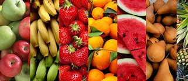
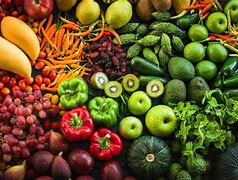
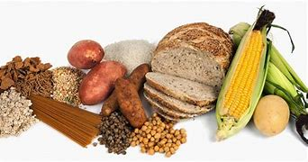
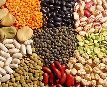
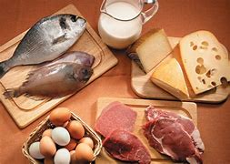
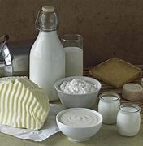

| Tipo de Alimento | Ejemplo | Imagen |
|---|---|---|
| Frutas | Manzana, fresas, sandia, platano. |  |
| Verduras | Espinacas, calabazas, zanahorias. |  |
| Cereales | Maíz, arroz, trigo, pan |  |
| Leguminosas | Frijoles, lentejas, alubias |  |
| Origen animal | Pollo, carne de res, pescado |  |
| Lacteos | Leche, yogurth |  |
Una alimentación saludable nos ayuda a tener un buen estado de salud, a sanar o realizar procesos de recuperación, acombatir enfermedades e infecciones y a evitar enfermedades crónicas degenerativas causadas por la obesidad.Si bien, todos tenemos necesidades diferentes de nutrición, lo que es igual para todos es tener hábitos de alimentación quefavorezcan nuestra salud y la de toda nuestra familia. La preparación de los alimentos debe ser higiénica, es mucho mejorpreparar los alimentos en casa y si es posible comer en compañía de la familia o amigos para poder disfrutar ese momento.La dieta debe de ser variada y suficiente. Respecto a esto, en los siguientes blogs te mostraremos cuáles son las porcionesadecuadas para comer lo que tu cuerpo necesita.Debemos aprovechar también los alimentos regionales en donde vivimos y los de cada estación ya que eso también nosayudará a tener una alimentación variada y económica.Otra cosa importante es incluir en las comidas principales (desayuno, comida, cena) todos los grupos de alimentos,consumiendo más verduras, debido a que nos dan satisfacción y contienen fibra, agua, vitaminas y elementos inorgánicos(minerales).